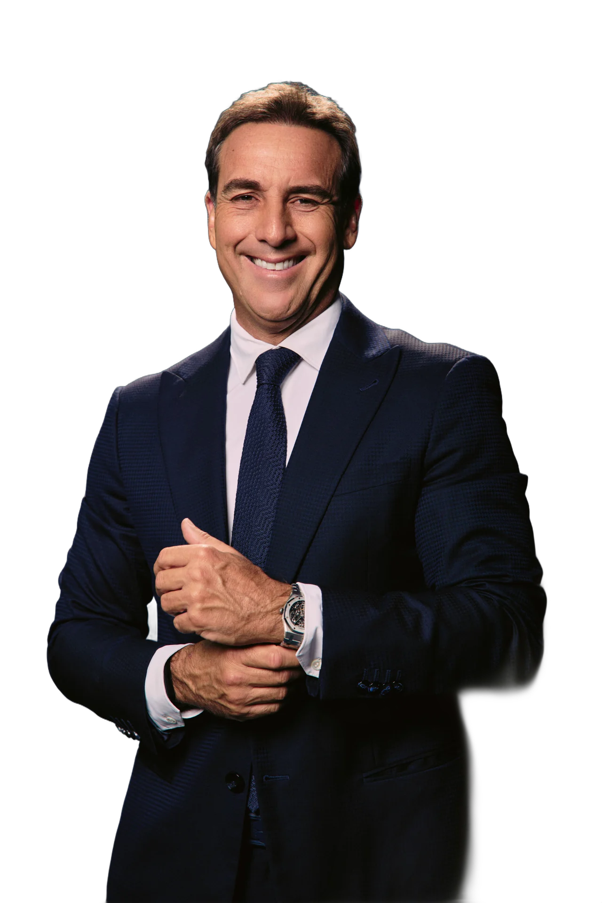
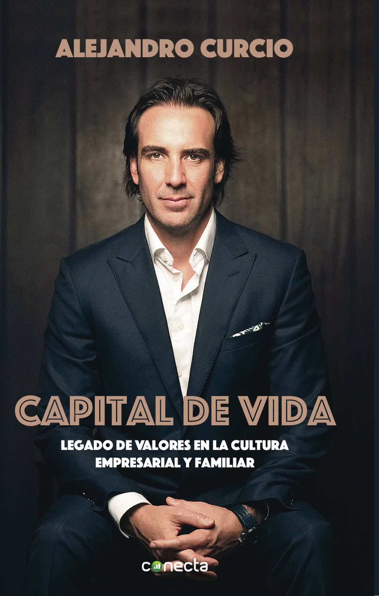
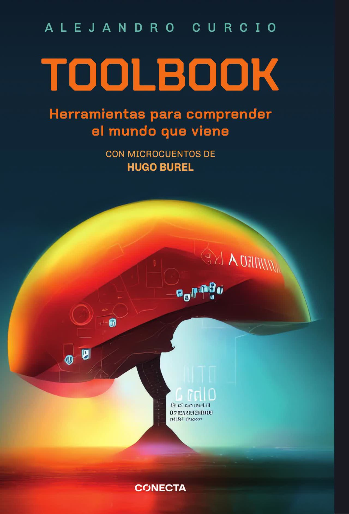
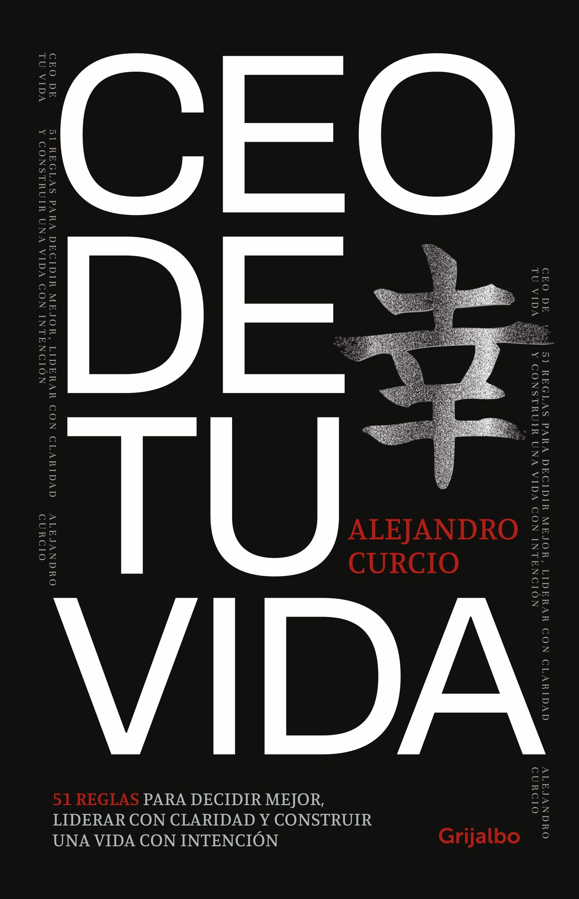

Capital de Vida
Legado de valores en la cultura empresarial y familiar
Ver el libro

Presidente de Ayax S.A. —importador oficial de Toyota y Suzuki en Uruguay, la empresa familiar que su padre fundó en enero de 1945— y de Curcio Capital, su firma de inversión en tecnología, biotecnología y real estate.
Escribió tres libros. Ganó un Cannes Lions con The HY Project. Es piloto de drift y líder de equipo de Toyota Gazoo Racing en el Superturismo. Y pone la misma energía en lo que devuelve a la comunidad: un récord Guinness a beneficio de Centro Horizonte, tres récords consecutivos de recaudación para la Teletón y un récord de casas construidas en un solo día junto a TECHO. Además, apoya de forma constante a la Fundación Cireneos, a Redalco y a Pelota al Medio, impulsando iniciativas que suman a la comunidad.
Y, antes que todo, es padre de Lucca, Camila y Paulina.



Legado de valores en la cultura empresarial y familiar
Ver el libroHerramientas para comprender el mundo que viene
Ver el libro51 reglas para decidir mejor, liderar con claridad y construir una vida con intención.
Enterate del lanzamientoUn chat entrenado con sus libros y su prensa.
Responde solo con lo que Alejandro publicó. Si no lo sabe, lo dice.